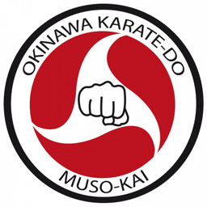
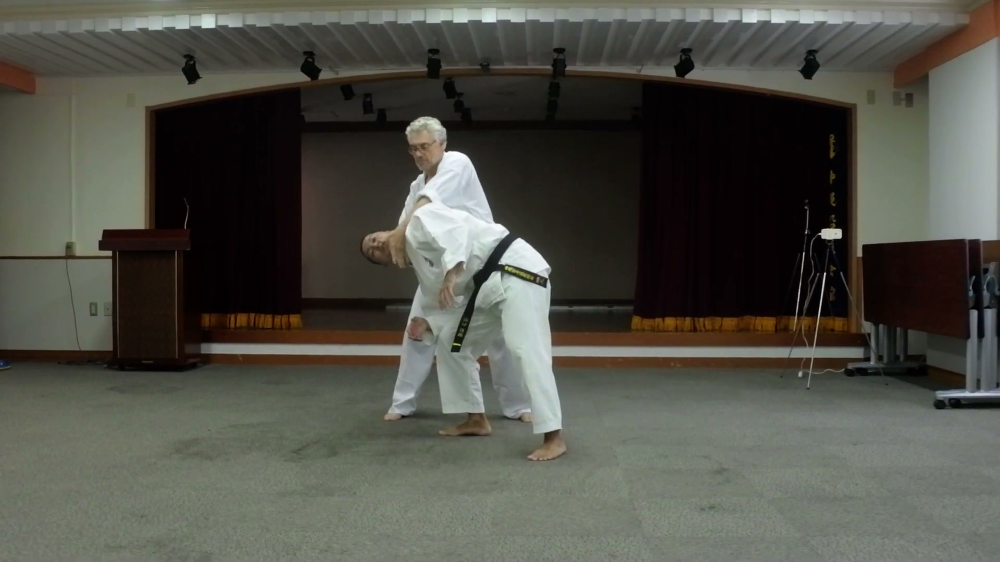
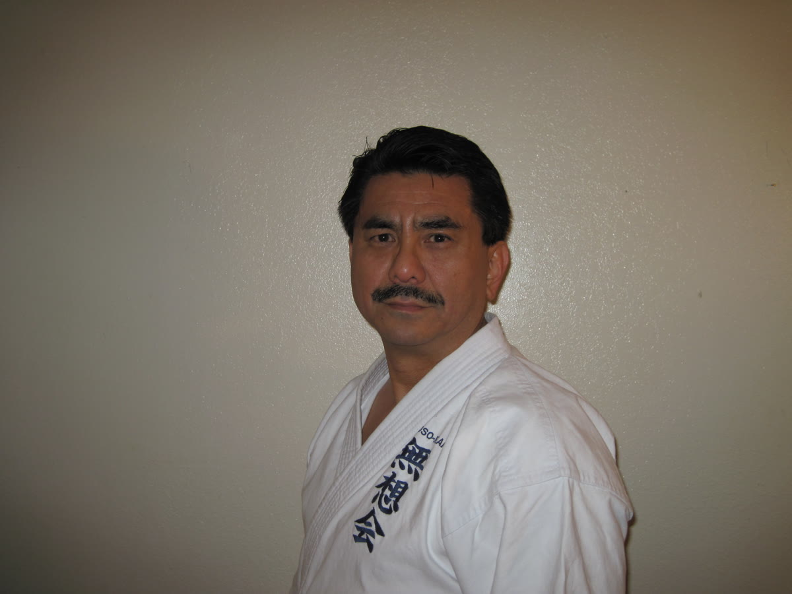
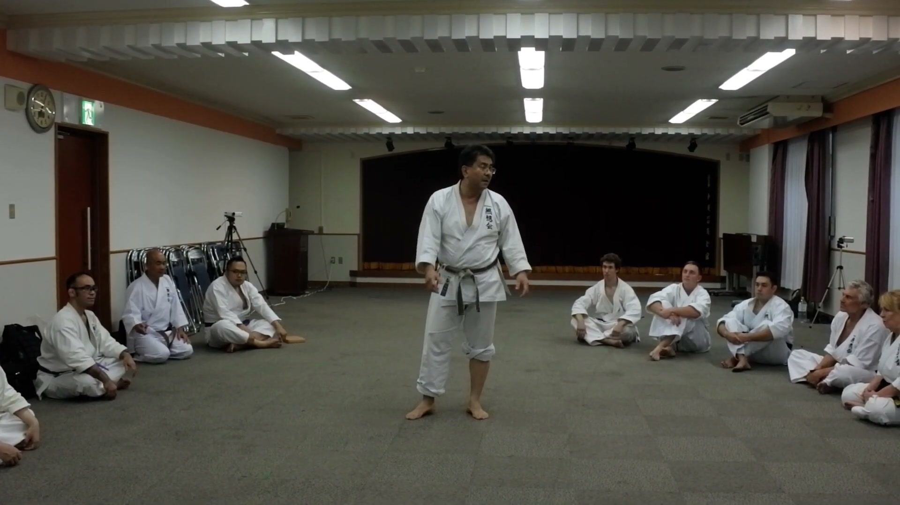
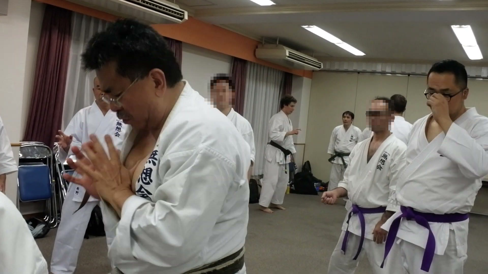

国際沖縄空手道無想会 沖縄同好会International Okinawa Karate-do Muso-kai Okinawa Club競技化の中で失われた古伝沖縄空手の身体操作を、発祥の地・沖縄で。国際沖縄空手道無想会 会長・新垣清の著書に基づく体系的な稽古を、初心者から経験者まで。
体験稽古に申し込む（初回1,000円） 稽古日程を見る
稽古の根拠は、新垣清会長の著書『沖縄武道空手の極意』シリーズ。感覚頼みの口伝ではなく、解剖学と物理で説明される技術体系を、本と稽古の両輪で学べます。
重力の落下と腰の使い方でエネルギーを生む、古伝沖縄空手の身体操作。年齢や体格に関係なく上達できるため、40代・50代からの入門者も多くいます。
競技試合はありません。ポイントの取り合いではなく、ナイファンチやピンアンなど形の中に残された本来の術理をひとつずつ身体に落とし込んでいきます。
「無想会」という名は、「無念無想」の境地に由来します。そして新垣師範の言葉──「無を想う者、世に有を為す」からも取られています。
このシンボルマークは、琉球王国・尚王家の紋章であり王国の旗でもあった「三つ巴」の中に、空手の象徴である正拳を描いたものです。尚家の印は巴が左回りの「左御紋」でしたが、無想会のシンボルは尚家と琉球王国への敬意を示して右回りにしています。そこには、沖縄で生まれ世界へ羽ばたいた空手が世界の平和と繁栄に貢献し、その役割がやがて沖縄への貢献となって戻っていく──という願いが込められています。
競技の空手ではなく、
武術としての空手を。
試合も、ポイントの取り合いもありません。形の中に残された先人の身体操作を、一つずつ解き明かしながら、生涯続けられる武道としての空手を稽古します。

1954年、空手発祥の地・沖縄県那覇市に、外科病院を営む医家の長男として生まれる。母方の親族に松林流九段の喜屋武真栄先生がいたこともあり、幼少より空手に親しむ。競技空手が世界に広がる一方で失われていった「古伝沖縄空手の身体操作」を、解剖学・物理学の視点から研究・体系化し、国際沖縄空手道無想会を創設。
その技術と思想をまとめた著書『沖縄武道空手の極意』シリーズは空手界に大きな反響を呼び、国内外でセミナーを開催。現在も沖縄をはじめ全国の同好会・稽古会で直接指導を行っています。
一人の空手家が、失われた古伝の術理にたどり着くまで。会長・新垣清のあゆみをたどります。
外科病院を営む医学博士の家の長男として、那覇市に誕生。母方の親族に、松林流九段で参議院議員も務めた喜屋武真栄先生がおり、幼い頃から空手への憧れを抱いて育ちます。
中学では当時まだ稀だった空手部の創設に関わり、長嶺将真師範の初期の弟子・田場典永先生から、ナイファンチを基礎に首里手の形を徹底して指導されます。那覇高校時代には長嶺将真師範の道場の門をくぐりました。「一人一手」の武術が各地に残る時代、多くの「隠れ武士」のもとを訪ね歩きます。
渡米して大学の空手部を指導したのち、1980年、ユタ州に無想会の道場を開設します。
フルコンタクト空手や防具つきの硬式空手の国際大会で、自身や門下生が上位入賞。ユタ州最大の全米大会を年2回主催するまでになります。1987年には米国硬式空手連盟会長に任命され、六段を允許されました（現在は七段）。円心会館・二宮城光館長からの影響も、この時期のものです。
マザー・テレサ女史の「死にゆく人の家」で、ボランティアとして多くの死にゆく人々を看取ります。人を生かす医家に生まれ、究極には人を倒す空手を修める──その矛盾と向き合うなかで、「無を想う者、世に有を為す」という理念にたどり着きました。
「形は出来ても、武術としての手が理解できていなかった」──その事実に気づいた新垣師範は、順調だった大会・普及活動をすべて中止し、ナイファンチをはじめ古伝の形を一から修行し直します。経済的困窮を伴う、文字通り困難な時期でした。
一対一で受け継がれてきた沖縄空手を、多人数へ指導する方法づくりに、さらに約5年を費やします。基本から組手まで、すべてをナイファンチの思想で貫く──現在の無想会の体系が、こうして築かれました。
再修業で得た身体思想・操作は『沖縄武道空手の極意』シリーズとして出版され、「新垣理論」と称されるまでに。英語・スペイン語・イタリア語にも翻訳されました。『沖縄空手道の歴史』（2011・原書房）、『沖縄空手道の真髄「平安の形」の検証』（2013・原書房）で、琉球王国時代の空手と平安の形を解明。いまも世界各地でセミナーを開き、日本各地に同好会が生まれています。
県内3か所で稽古しています。お住まいの近くの稽古会へどうぞ。各稽古会の責任者は、いずれも新垣清会長より10年以上直接指導を受けた直弟子です。


| 体験稽古（初回参加のみ・見学含む） | 1,000円 |
|---|---|
| 出稽古（入会せず2回目以降参加） | 3,000円／回 |
| 入会費 | 10,000円 |
| 月会費（那覇稽古会） | 5,000円 |
| 月会費（沖縄市稽古会） | 5,000円 |
| 月会費（西表稽古会） | お問い合わせください |
| 年会費 | 10,000円（毎年4月・年度初めに支払い） |
※表示はすべて税込です。
下の申込フォームから、希望の稽古会と日程を送信してください。
担当者からメールで参加日と持ち物をご案内します。
動きやすい服装と飲み物だけでOK。道着があればご持参ください。
体験後の勧誘はしません。じっくりご検討ください。
無想会の技術は、Instagram連載『漫画でわかる「沖縄武道空手の極意」』で毎日1話ずつ紹介しています。稽古の雰囲気や考え方を、まずはSNSでご覧ください。
無想会の技術は、YouTube『Muso-kai Karate Channel 無想会空手チャンネル』で新垣清会長が紹介しています。無想会の理論を、まずはSNSでご覧ください。
本部・全国の同好会の公式サイト・ブログ・SNSをまとめました。
初回体験（見学含む）1,000円。まずはお気軽にどうぞ。
申込フォームへ進む メールでのお問い合わせ：musokai.okinawa.branch@gmail.com